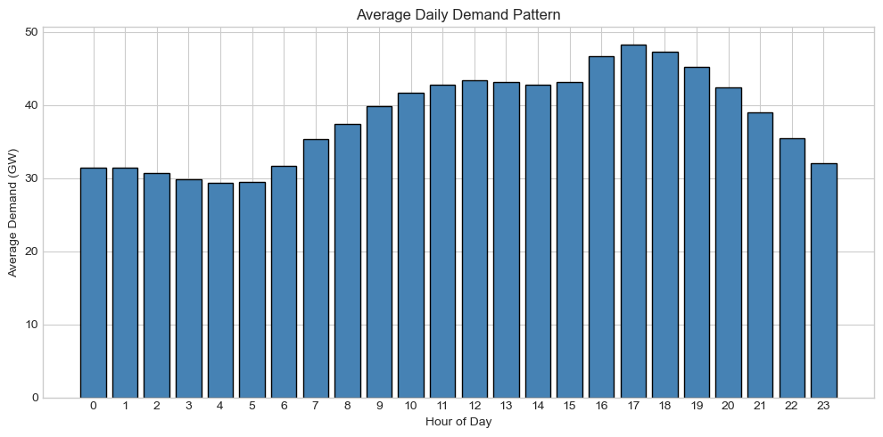
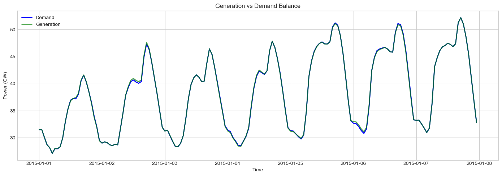

Demand#
This tutorial covers electricity demand modeling in PyPSA-GB, including historical profiles, future projections, and spatial disaggregation.
What You’ll Learn#
Demand data sources (ESPENI, eLOAD, DESSTINEE)
Temporal profiles and patterns
Spatial demand distribution
Future demand scaling with FES
Demand-side flexibility
1. Setup#
[1]:
import pypsa
import pandas as pd
import numpy as np
import matplotlib.pyplot as plt
import warnings
from pyproj import Transformer
from _map_utils import prepare_map_network, explore_network_map
warnings.filterwarnings('ignore')
plt.style.use('seaborn-v0_8-whitegrid')
plt.rcParams['figure.figsize'] = [12, 6]
plt.rcParams['figure.dpi'] = 100
print(f"PyPSA version: {pypsa.__version__}")
PyPSA version: 1.0.7
2. Demand Data Sources#
PyPSA-GB supports multiple demand data sources:
Source |
Type |
Resolution |
Use Case |
|---|---|---|---|
ESPENI |
Historical |
Half-hourly, national |
Historical scenarios |
eLOAD |
Synthetic |
Hourly, sectoral |
Future projections |
DESSTINEE |
Synthetic |
Hourly |
Alternative future profiles |
FES |
Projections |
Annual totals |
Capacity scaling |
3. Load a Network with Demand#
[2]:
# Load a historical network
n = pypsa.Network("../../../resources/network/Historical_2015_reduced_solved.nc")
print("Network loaded")
print(f" Loads: {len(n.loads)}")
print(f" Snapshots: {len(n.snapshots)}")
print(f" Period: {n.snapshots[0]} to {n.snapshots[-1]}")
INFO:pypsa.network.io:Imported network 'Historical_2015_reduced (Full)' has buses, carriers, generators, lines, links, loads, storage_units, sub_networks
Network loaded
Loads: 32
Snapshots: 168
Period: 2015-01-01 00:00:00 to 2015-01-07 23:00:00
4. Demand Structure#
4.1 Loads in PyPSA#
[3]:
# Load components
print("Load DataFrame:")
n.loads.head()
Load DataFrame:
[3]:
| bus | carrier | type | p_set | q_set | sign | active | |
|---|---|---|---|---|---|---|---|
| name | |||||||
| load_Beauly | Beauly | 0.0 | 0.0 | -1.0 | True | ||
| load_Peterhead | Peterhead | 0.0 | 0.0 | -1.0 | True | ||
| load_Errochty | Errochty | 0.0 | 0.0 | -1.0 | True | ||
| load_Denny/Bonnybridge | Denny/Bonnybridge | 0.0 | 0.0 | -1.0 | True | ||
| load_Neilston | Neilston | 0.0 | 0.0 | -1.0 | True |
[4]:
# Demand time series
print("Demand time series shape:", n.loads_t.p_set.shape)
print(f"\nSample demand values (MW):")
n.loads_t.p_set.head()
Demand time series shape: (168, 31)
Sample demand values (MW):
[4]:
| name | load_Beauly | load_Peterhead | load_Errochty | load_Denny/Bonnybridge | load_Neilston | load_Strathaven | load_Torness | load_Eccles | load_Harker | load_Stella West | ... | load_Sundon/East Claydon | load_Melksham | load_Bramley | load_London | load_Kemsley | load_Sellindge | load_Lovedean | load_S.W.Penisula | EU_demand_IFA | EU_demand_East West Interconnector |
|---|---|---|---|---|---|---|---|---|---|---|---|---|---|---|---|---|---|---|---|---|---|
| snapshot | |||||||||||||||||||||
| 2015-01-01 00:00:00 | 125.398540 | 115.993649 | 34.484598 | 250.797080 | 250.797080 | 75.239124 | 106.588759 | 18.809781 | 172.422992 | 1686.610361 | ... | 1319.819632 | 2752.497950 | 1225.770727 | 4790.224222 | 1147.396640 | 87.778978 | 742.986349 | 2580.074957 | 0.0 | 120.0 |
| 2015-01-01 01:00:00 | 125.460546 | 116.051005 | 34.501650 | 250.921092 | 250.921092 | 75.276328 | 106.641464 | 18.819082 | 172.508251 | 1687.444344 | ... | 1320.472247 | 2753.858986 | 1226.376838 | 4792.592859 | 1147.963996 | 87.822382 | 743.353735 | 2581.350735 | 0.0 | 120.0 |
| 2015-01-01 02:00:00 | 120.162016 | 111.149865 | 33.044554 | 240.324032 | 240.324032 | 72.097210 | 102.137714 | 18.024302 | 165.222772 | 1616.179118 | ... | 1264.705221 | 2637.556256 | 1174.583708 | 4590.189019 | 1099.482448 | 84.113411 | 711.959946 | 2472.333483 | 0.0 | 8.0 |
| 2015-01-01 03:00:00 | 114.773477 | 106.165467 | 31.562706 | 229.546955 | 229.546955 | 68.864086 | 97.557456 | 17.216022 | 157.813531 | 1543.703270 | ... | 1207.990849 | 2519.277828 | 1121.910741 | 4384.346835 | 1050.177318 | 80.341434 | 680.032853 | 2361.464296 | 0.0 | 0.0 |
| 2015-01-01 04:00:00 | 108.474847 | 100.339234 | 29.830583 | 216.949695 | 216.949695 | 65.084908 | 92.203620 | 16.271227 | 149.152915 | 1458.986699 | ... | 1141.697770 | 2381.022902 | 1060.341634 | 4143.739174 | 992.544854 | 75.932393 | 642.713471 | 2231.869987 | 1022.0 | 0.0 |
5 rows × 31 columns
4.2 System-Wide Demand#
[5]:
# Total system demand
total_demand = n.loads_t.p_set.sum(axis=1) / 1000 # GW
print("System Demand Statistics (GW):")
print(f" Mean: {total_demand.mean():.2f}")
print(f" Peak: {total_demand.max():.2f}")
print(f" Minimum: {total_demand.min():.2f}")
print(f" Standard Dev: {total_demand.std():.2f}")
# Total energy
hours = len(n.snapshots)
energy_twh = total_demand.sum() / 1000 # TWh
print(f"\nTotal Energy: {energy_twh:.2f} TWh over {hours} hours")
System Demand Statistics (GW):
Mean: 38.33
Peak: 52.21
Minimum: 27.11
Standard Dev: 7.17
Total Energy: 6.44 TWh over 168 hours
[6]:
# Plot demand profile
fig, ax = plt.subplots(figsize=(14, 5))
ax.plot(total_demand.index, total_demand.values, linewidth=1.5, color='blue')
ax.fill_between(total_demand.index, total_demand.values, alpha=0.3)
ax.axhline(y=total_demand.mean(), color='red', linestyle='--', label=f'Mean: {total_demand.mean():.1f} GW')
ax.set_ylabel('Demand (GW)')
ax.set_xlabel('Time')
ax.set_title('System Electricity Demand')
ax.legend()
plt.tight_layout()
plt.show()

5. Temporal Patterns#
5.1 Daily Pattern#
[7]:
# Hourly pattern
demand_df = total_demand.to_frame('demand')
demand_df['hour'] = demand_df.index.hour
hourly_pattern = demand_df.groupby('hour')['demand'].mean()
fig, ax = plt.subplots(figsize=(10, 5))
ax.bar(hourly_pattern.index, hourly_pattern.values, color='steelblue', edgecolor='black')
ax.set_xlabel('Hour of Day')
ax.set_ylabel('Average Demand (GW)')
ax.set_title('Average Daily Demand Pattern')
ax.set_xticks(range(0, 24))
plt.tight_layout()
plt.show()
print(f"Morning peak: {hourly_pattern.loc[7:9].idxmax()}:00 ({hourly_pattern.loc[7:9].max():.2f} GW)")
print(f"Evening peak: {hourly_pattern.loc[17:21].idxmax()}:00 ({hourly_pattern.loc[17:21].max():.2f} GW)")
print(f"Night trough: {hourly_pattern.idxmin()}:00 ({hourly_pattern.min():.2f} GW)")

Morning peak: 9:00 (39.86 GW)
Evening peak: 17:00 (48.25 GW)
Night trough: 4:00 (29.30 GW)
5.2 Load Duration Curve#
[8]:
# Load duration curve
sorted_demand = total_demand.sort_values(ascending=False).values
hours = np.arange(1, len(sorted_demand) + 1)
fig, ax = plt.subplots(figsize=(12, 6))
ax.plot(hours, sorted_demand, linewidth=2, color='blue')
ax.fill_between(hours, sorted_demand, alpha=0.3)
# Mark key points
ax.axhline(y=total_demand.mean(), color='red', linestyle='--', label=f'Mean: {total_demand.mean():.1f} GW')
ax.axhline(y=total_demand.min(), color='green', linestyle=':', label=f'Min: {total_demand.min():.1f} GW')
ax.set_xlabel('Hours')
ax.set_ylabel('Demand (GW)')
ax.set_title('Load Duration Curve')
ax.legend()
plt.tight_layout()
plt.show()
# Load factor
load_factor = total_demand.mean() / total_demand.max() * 100
print(f"Load Factor: {load_factor:.1f}%")

Load Factor: 73.4%
6. Spatial Distribution#
6.1 Demand by Bus#
[9]:
# Average demand at each bus
bus_demand = n.loads_t.p_set.mean() / 1000 # GW
print("Top 10 Buses by Demand (GW):")
print(bus_demand.sort_values(ascending=False).head(10).round(3).to_string())
Top 10 Buses by Demand (GW):
name
load_London 5.820
load_Melksham 3.344
load_S.W.Penisula 3.135
load_Daines 3.013
load_Feckenham 2.727
load_Deeside 2.643
load_Stella West 2.049
load_Th. Marsh/Stocksbridge 2.007
load_Sundon/East Claydon 1.603
load_Ratcliffe 1.554
[10]:
# Interactive map showing demand distribution
if len(bus_demand) > 0:
map_n = prepare_map_network(n)
# Vectorised calculation of average demand per load (MW)
mean_per_load = n.loads_t.p_set.mean()
# Keep only loads that actually have a timeseries
loads_with_ts = n.loads.loc[n.loads.index.intersection(mean_per_load.index)]
# Join load-to-bus mapping with mean demand and aggregate per bus
df = loads_with_ts[['bus']].join(mean_per_load.rename('mean_MW'))
bus_demand_by_bus = df.groupby('bus')['mean_MW'].sum()
# Reindex to include all buses and fill missing values with 0
bus_demand_by_bus = bus_demand_by_bus.reindex(n.buses.index).fillna(0.0)
# Add demand to buses for tooltip display (units: MW)
map_n.buses["demand_MW"] = bus_demand_by_bus
# Report any loads that lacked a timeseries (examples shown)
missing_loads = set(n.loads.index) - set(mean_per_load.index)
if len(missing_loads) > 0:
print(f"Warning: {len(missing_loads)} loads have no timeseries and were ignored (examples: {list(missing_loads)[:5]})")
print("Spatial Demand Distribution (Bus size = average demand)")
print("lon range:", float(map_n.buses.x.min()), float(map_n.buses.x.max()))
print("lat range:", float(map_n.buses.y.min()), float(map_n.buses.y.max()))
# Interactive network map with demand-based bus sizing
m = map_n.plot.explore(
map_style="light",
tooltip=True,
bus_size=map_n.buses["demand_MW"].clip(lower=10),
bus_size_factor=0.05,
branch_width_factor=1.0,
bus_columns=["demand_MW", "v_nom"],
)
display(m)
Warning: 1 loads have no timeseries and were ignored (examples: ['EU_demand_Britned'])
Spatial Demand Distribution (Bus size = average demand)
lon range: -6.09249939157784 4.058099999999997
lat range: 50.912041859956986 57.484467069924335
7. Future Demand Projections#
7.1 Compare Historical vs Future#
[11]:
# Try to load a future scenario for comparison
try:
n_future = pypsa.Network("../../../resources/network/HT35_clustered_solved.nc")
future_demand = n_future.loads_t.p_set.sum(axis=1) / 1000
print("Demand Comparison:")
print(f"\n Historical 2015:")
print(f" Mean: {total_demand.mean():.2f} GW")
print(f" Peak: {total_demand.max():.2f} GW")
print(f"\n Future 2035 HT:")
print(f" Mean: {future_demand.mean():.2f} GW")
print(f" Peak: {future_demand.max():.2f} GW")
print(f"\n Change:")
print(f" Mean: {(future_demand.mean()/total_demand.mean() - 1)*100:+.1f}%")
print(f" Peak: {(future_demand.max()/total_demand.max() - 1)*100:+.1f}%")
except FileNotFoundError:
print("Future network not found")
n_future = None
INFO:pypsa.network.io:Imported network 'HT35_clustered (Clustered)' has buses, carriers, generators, lines, links, loads, storage_units, stores, sub_networks
Demand Comparison:
Historical 2015:
Mean: 38.33 GW
Peak: 52.21 GW
Future 2035 HT:
Mean: 38.95 GW
Peak: 48.43 GW
Change:
Mean: +1.6%
Peak: -7.2%
[12]:
# Compare load duration curves
if n_future is not None:
fig, ax = plt.subplots(figsize=(12, 6))
# Historical
sorted_hist = total_demand.sort_values(ascending=False).values
hours_hist = np.arange(1, len(sorted_hist) + 1) / len(sorted_hist) * 100
# Future
sorted_future = future_demand.sort_values(ascending=False).values
hours_future = np.arange(1, len(sorted_future) + 1) / len(sorted_future) * 100
ax.plot(hours_hist, sorted_hist, linewidth=2, label='2015 Historical', color='blue')
ax.plot(hours_future, sorted_future, linewidth=2, label='2035 HT', color='green')
ax.set_xlabel('% of Time')
ax.set_ylabel('Demand (GW)')
ax.set_title('Load Duration Curve Comparison')
ax.legend()
plt.tight_layout()
plt.show()

8. Demand vs Generation Balance#
[13]:
# Generation vs demand
generation = n.generators_t.p.sum(axis=1) / 1000 # GW
fig, ax = plt.subplots(figsize=(14, 5))
ax.plot(total_demand.index, total_demand.values, label='Demand', linewidth=2, color='blue')
ax.plot(generation.index, generation.values, label='Generation', linewidth=2, color='green', alpha=0.7)
ax.set_ylabel('Power (GW)')
ax.set_xlabel('Time')
ax.set_title('Generation vs Demand Balance')
ax.legend()
plt.tight_layout()
plt.show()
# Balance check
imbalance = (generation - total_demand).abs()
print(f"Max imbalance: {imbalance.max()*1000:.1f} MW")
print(f"Average imbalance: {imbalance.mean()*1000:.1f} MW")

Max imbalance: 300.0 MW
Average imbalance: 78.2 MW
9. Demand Time Series Configuration#
Demand time series can be configured in scenarios:
[14]:
demand_config = """
# ESPENI (default for historical)
demand_timeseries: "ESPENI" # Half-hourly national demand
# eLOAD (synthetic profiles)
demand_timeseries: "eload"
profile_year: 2050 # 2010 or 2050 profile year
# DESSTINEE (alternative synthetic)
demand_timeseries: "desstinee"
# Demand disaggregation (future)
demand_disaggregation:
enabled: true
components: ["heat_pumps", "EVs"]
"""
print("Demand Configuration Options:")
print(demand_config)
Demand Configuration Options:
# ESPENI (default for historical)
demand_timeseries: "ESPENI" # Half-hourly national demand
# eLOAD (synthetic profiles)
demand_timeseries: "eload"
profile_year: 2050 # 2010 or 2050 profile year
# DESSTINEE (alternative synthetic)
demand_timeseries: "desstinee"
# Demand disaggregation (future)
demand_disaggregation:
enabled: true
components: ["heat_pumps", "EVs"]